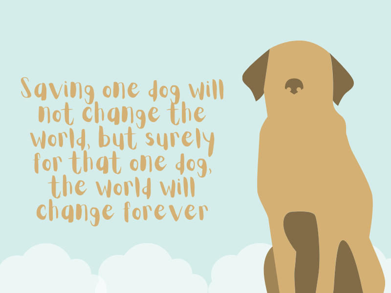

Creemos fielmente en las segundas oportunidades, por eso nuestro principal objetivo es rescatar y resguardar a mascotas que han sufrido abandono o maltrato permitiendoles encontrar un hogar lleno de amor
Beneficios de la adopción: 